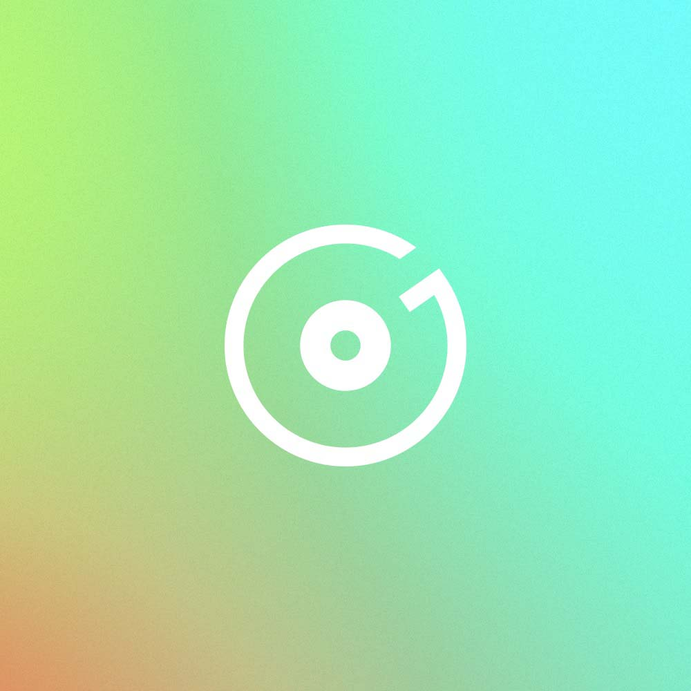

我的音乐
听歌总时长
0 小时 00 分钟
播放列表
已选择 0 首

这里还没有音乐
添加电脑上的歌曲，或者导入 Groove 创建的播放列表。
音乐库
添加本地音乐，导入 Groove 播放列表，或管理自动扫描的文件夹。
音乐文件夹
尚未添加自动扫描目录
音乐内容显示
切换我的音乐页面的显示密度。
听歌统计
今日0 小时 00 分钟
本月0 小时 00 分钟
今年0 小时 00 分钟
总累计0 小时 00 分钟
声音
调整声音增强与音效。
播放/暂停渐强渐弱
播放时音量渐强，暂停时渐弱，让声音平滑过渡。
外观
调整界面主题、自定义背景与玻璃材质。
跟随系统显示缩放，可按需调整界面大小。
保持原始比例铺满封面区域，超出部分会被裁切。
自定义主题色
调整按钮、选中状态与渐变强调色。
自定义背景
用模糊图片替代默认染色，保留桌面透视。
默认染色
背景材质
选择窗口背景的玻璃效果。
歌词
调整歌词内容、文字大小与颜色。
逐字歌词（实验功能）
开启后强制从网络获取歌词。
歌词中文翻译
自动识别非中文歌词，并在歌曲详情页和桌面歌词中显示中文翻译。
歌词字体大小
调整歌词字号。
非播放歌词颜色
调整非播放歌词的文字颜色。
桌面歌词
调整悬浮歌词的样式、锁定与位置。
桌面歌词字体大小
调整桌面歌词悬浮窗中的歌词字号。
桌面歌词字体颜色
单独调整桌面歌词的主色与渐变色。
锁定桌面歌词
锁定后悬浮窗不会遮挡鼠标操作，可在这里或托盘菜单解除锁定。
桌面歌词位置
将桌面歌词悬浮窗还原到主显示器顶部居中的默认位置。
全局快捷键
点击按键可自定义 Ctrl、Alt、Shift 组合，保存前会检查软件内重复和系统注册占用。
启用全局暂停快捷键
启用全局暂停快捷键：Alt+S
启用全局桌面歌词快捷键
启用显示或隐藏桌面歌词快捷键：Alt+W
启用全局歌词刷新快捷键
启用全局歌词刷新快捷键：Alt+D
启用全局上一首歌快捷键
启用全局上一首歌快捷键：Alt+Q
窗口与托盘
管理窗口关闭与系统托盘。
关闭行为
选择点击右上角关闭按钮时的处理方式。
显示系统托盘
关闭后不再显示系统托盘图标。
更新与关于
本地 Windows 音乐播放器。
- 应用版本
- 正在读取
- 安装目录
- E:\Medo_music\release